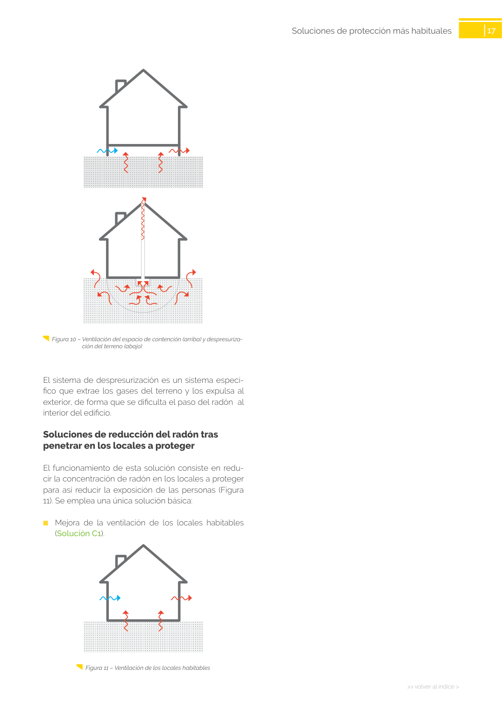

<!doctype html>
<html lang="es"><head><meta charset="utf-8">
<meta name="viewport" content="width=device-width, initial-scale=1">
<title>GUIA · p. 17 — Página 17</title><link rel="stylesheet" href="../estilo.css">
</head><body>
<nav><a href="../index.html">Índice</a> › <a href="../doc/guia-pdf-23d2f2198c3b-sin-fecha-6765d0c34c51.html">GUIA</a> › p. 17</nav>

<header class="meta">
<p><strong>GUIA</strong> · Página 17 · versión sin-fecha</p>
<p>SHA256: <code>6765d0c34c51fbe193c3ed0c1378b710f98f086d16e2b68fc28ed36e143fdaea</code> · página física 17 de 24 · métodos de encabezado
solo si están cotejados.</p>
<p><a href="../doc/guia-pdf-23d2f2198c3b-sin-fecha-6765d0c34c51.html">Documento</a> · <a href="guia-pdf-23d2f2198c3b-sin-fecha-6765d0c34c51__p0016.html">← p. 16</a> · <a href="guia-pdf-23d2f2198c3b-sin-fecha-6765d0c34c51__p0018.html">p. 18 →</a></p>
<p>Formatos: <a href="../../contenido/docs/GUIA-PDF-23d2f2198c3b/sin-fecha__6765d0c34c51/pagina/p0017.md">Markdown</a> · <a href="../../contenido/docs/GUIA-PDF-23d2f2198c3b/sin-fecha__6765d0c34c51/bloque/p0017.json">JSON de bloques</a> · <a href="../../contenido/docs/GUIA-PDF-23d2f2198c3b/sin-fecha__6765d0c34c51/fuente.pdf#page=17">PDF p. 17</a> · <a href="../../contenido/docs/GUIA-PDF-23d2f2198c3b/sin-fecha__6765d0c34c51/figura/p0017.png">imagen PNG</a></p>
</header>
<nav class="paginas"><a href="../doc/guia-pdf-23d2f2198c3b-sin-fecha-6765d0c34c51.html">Documento</a> <a href="guia-pdf-23d2f2198c3b-sin-fecha-6765d0c34c51__p0016.html">← p. 16</a> <a href="guia-pdf-23d2f2198c3b-sin-fecha-6765d0c34c51__p0018.html">p. 18 →</a></nav>
<h2>Encabezado de la página</h2><ul><li>Sin encabezado de fuente cotejada en esta página.</li></ul>
<p class="aviso">Página gráfica: el texto extraído puede ser parcial. Prevalece la imagen/PDF; depende de ellos.</p>
<pre class="literal">17
&gt;&gt; volver al índice &gt;
Soluciones de protección más habituales 
  Figura 10 – Ventilación del espacio de contención (arriba) y despresuriza­
ción del terreno (abajo)
El sistema de despresurización es un sistema especí­
fico que extrae los gases del terreno y los expulsa al 
exterior, de forma que se dificulta el paso del radón  al 
interior del edificio.
Soluciones de reducción del radón tras 
penetrar en los locales a proteger
El funcionamiento de esta solución consiste en redu­
cir la concentración de radón en los locales a proteger 
para así reducir la exposición de las personas (Figura 
11). Se emplea una única solución básica:
	
■
Mejora de la ventilación de los locales habitables 
(Solución C1).
  Figura 11 – Ventilación de los locales habitables
</pre>
<figure><a href="../../contenido/docs/GUIA-PDF-23d2f2198c3b/sin-fecha__6765d0c34c51/figura/p0017.png"></a><figcaption>Imagen de la página 17 (PNG ya extraído; prevalece sobre fórmulas).</figcaption></figure>
<h2>Tablas candidatas de esta página</h2><ul><li><a href="../../contenido/docs/GUIA-PDF-23d2f2198c3b/sin-fecha__6765d0c34c51/tabla/p0017_t01.json">p0017_t01.json</a> · <a href="../../contenido/docs/GUIA-PDF-23d2f2198c3b/sin-fecha__6765d0c34c51/tabla/p0017_t01.csv">.csv</a> (0 × 0; candidata, no reconstruida aquí)</li></ul>
<h2>Referencias, notas y excepciones (página y vecinas)</h2><ul><li><a href="../apartado/guia-pdf-23d2f2198c3b-sin-fecha-6765d0c34c51__a0054.html">ID a0054 · Guía de elección</a></li></ul>
<h2>Apartados que incluyen esta página</h2><ul><li><a href="../apartado/guia-pdf-23d2f2198c3b-sin-fecha-6765d0c34c51__a0051.html">ID a0051 · Soluciones de aislamiento del edificio</a></li><li><a href="../apartado/guia-pdf-23d2f2198c3b-sin-fecha-6765d0c34c51__a0052.html">ID a0052 · Soluciones de reducción del radón tras penetrar en los locales a proteger</a></li></ul>

<footer>Generado estáticamente desde JSON normalizado; sin JavaScript ni servicios externos.
El JSON es la fuente; este HTML es caché reproducible.</footer>
</body></html>
